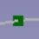

Cables WireFlex/it
|
|
| Menu location |
|---|
| Cable Wires → WireFlex |
| Workbenches |
| Cables |
| Default shortcut |
| W F |
| Introduced in version |
| 0.1.0 |
| See also |
| Cables AddVertex, Cables DelVertex, Cables AttachVertex, Cables RemoveVertexAttachment, Cables Edit |
Description
The  WireFlex object is derived from
WireFlex object is derived from  Draft Wire and inherits all its properties. The main difference is that WireFlex is able to attach every of its vertexes to external vertex or object (attachment to object is understood as an attachment to its Placement.Base). Not every vertex has to be attached, some of them can be left to move freely depending on current needs. Another difference is that the WireFlex can take on three different shapes (see Path Type Proterty).
Draft Wire and inherits all its properties. The main difference is that WireFlex is able to attach every of its vertexes to external vertex or object (attachment to object is understood as an attachment to its Placement.Base). Not every vertex has to be attached, some of them can be left to move freely depending on current needs. Another difference is that the WireFlex can take on three different shapes (see Path Type Proterty).
Main purpose of a WireFlex is to serve as a base for a Cable or a Cable Conduit.
All WireFlex vertexes can be edited like Draft Wire vertexes with the Cables Edit command (just double-click on the WireFlex in the Tree View). See Notes.
Some properties of WireFlex inherited from Draft Wire are hidden by default, some of them like Fillet Radius can be controlled from the cable properties if WireFlex is a base of a Cable. From version 0.2.0 onward the following restriction has been removed: in version 0.1.4 and earlier it was strongly recommended to set Fillet Radius as the last step of WireFlex creation. Setting this during WireFlex editing could lead to an error: "Not possible to modify WireFlex due to non zero Chamfer or Fillet or Subdivision".
{kind=link}
Sample structure of WireFlex
Path Type Property
(property introduced in version 0.2.0)
WireFlex object can take on three different shapes based on the same Points property. These are: Wire, B-spline-K, B-spline-P. For a Wire shape the Points serve as vertices, for a B-spline-K shape the Points are mapped as knots (like in Draft BSpline) and for a B-spline-P shape the Points act as poles (similar to Draft BezCurve, a B-spline-P is smoother then and easier to control than a B-spline-K).
Curves such as B-spline-K and B-spline-P do not officially exist. Both refer to the B-spline curve. These names were introduced here to distinguish how these two curves are created, resulting in different shapes.
{kind=link}
{kind=link}
{kind=link}
Colors of Vertexes
(feature introduced in version 0.2.0)
By default points representing WireFlex vertexes can have the following colors:
 for regular vertex which can be freely moved,
{kind=link}
or for attached vertex (see Attach Vertex for details),
{kind=link}
{kind=link}
{kind=link}
{kind=link}
If necessary, the above colors can be changed (see View Properties).
Usage
- Select the first external existing vertex in the 3D View
- Select additional vertexes (one or more) in the 3D View holding the CTRL key.
- It is also acceptable to select nothing, then the default wire with 5cm length will be created (introduced in version 0.3.0).
- Create WireFlex by one of these methods:
Note1: selection of elements other than vertexes is treated as a selection of entire object. In this case the Placement.Base of a selected object is taken as a reference.
Note2: If only one vertex|entire object is selected, then created WireFlex will be built from the Points property of selected object and no vertex attachments are made. If selected object has no Points property, the creation is made from the vertexes of selected object.
After wire creation the first vertex|object which was selected in 3D View is automatically added to Attachment Support of a wire and the Map Mode property is set to Translate origin (general description of part attachment is here: Part EditAttachment). Additionally the same vertex|object is added to Vrtx_start property, the last selected vertex|object is added to Vrtx_end property and the selected mid vertexes|objects are added to Vrtxs_mid and Vrtxs_mid_idx accordingly.
At any time any WireFlex vertex can be detached or reatached to other object by using  Attach Vertex or
Attach Vertex or  Remove Vertex Attachment tools (or by using
Remove Vertex Attachment tools (or by using  Cables Edit command).
Cables Edit command).
It is advised to experiment and familiarize yourself with the various options for possibly moving objects attached to a wire and observe the behavior of the wire depending on how many and which vertexes are attached to external objects and whether the Map Mode property is enabled or disabled for the entire wire. Even more interesting possibilities are provided by using e.g.  Support Line or
Support Line or  Support Point.
Support Point.

Example1
Movement of the Cube1 which is attached to WireFlex start vertex when Attachment Map Mode of WireFlex is set to Translate origin.

Example2
Movement of the Cube1 which is attached to WireFlex start vertex when Attachment Map Mode of WireFlex is Deactivated.
Animated version of the above images is here
Notes
- A WireFlex can be edited with the Cables Edit command (run by double-click on the WireFlex in the Tree View) (introduced in version 0.2.0). Do not use Draft Edit due to the restrictions described below.
In version 0.1.4 and earlier Draft Edit was used with the following restrictions:
When in Draft Edit mode DO NOT use "Add point" and "Delete point" from context menu. This can lead to wrong assignment of points attachments. To add or delete point from WireFlex use only  Add Vertex or
Add Vertex or  Delete Vertex while not in Draft Edit mode.
Delete Vertex while not in Draft Edit mode.
Properties
See also: Property View.
A Cables WireFlex object is derived from a Draft Wire and inherits all its properties. Some of the inherited properties are hidden (see Description). WireFlex has also the following additional properties:
Data
Wire Flex
- DatiVrtx_start (
LinkSub): specifies the attachment support for the first vertex (point) of the wire. - DatiVrtx_end (
LinkSub): specifies the attachment support for the last vertex (point) of the wire. - DatiVrtxs_mid (
LinkSubList): specifies the list of attachment support for the middle vertexes (points) of the wire. Middle vertexes: all wire vertexes except the first and the last vertex. - DatiVrtxs_mid_idx (
IntegerList): specifies the list of indexes of Vrtxs_mid attachment support list of the wire. The lowest mid idx number can have a value 2, the highest can have a value n-1, where n is the number of vertexes (points) of the wire.
It is recommended to not adjust the above properties manually, but to use  Attach Vertex,
Attach Vertex,  Remove Vertex Attachment or
Remove Vertex Attachment or  Cables Edit tools which are designed to do so.
Cables Edit tools which are designed to do so.
Wire Flex Shape
- DatiFillet Radius (
Length): specifies the radius of the fillets at the corners of the wire. It is valid and visible if Path Type =Wire. - DatiLength (
Length): (read-only) specifies the total length of the wire. - DatiPath Type (
Enumeration): specifies the type of the wire shape (introduced in version 0.2.0). Possible values:Wire,BSpline_K,BSpline_P - DatiBoundary Segment Start (
Length): specifies the length of a straight edge at the beginning of a wire. It is valid and visible if Path Type =BSpline_PorBSpline_K. It can be used when beginning of a cable sits inside a connector or if a straight part of BSpline wire is needed. Its value is represented in 3D View as a boundary vertex with a special color. This vertex cannot be attached to other objects. It is recommended to leave the value of this property > 0 if the WireFlex is used as a base for Cable or Cable Conduit. - DatiBoundary Segment End (
Length): specifies the length of a straight edge at the end of a wire. It is valid and visible if Path Type =BSpline_PorBSpline_K. It can be used when end of a cable sits inside a connector or if straight part of BSpline wire is needed. Its value is represented in 3D View as a boundary vertex with a special color. This vertex cannot be attached to other objects. It is recommended to leave the value of this property > 0 if the WireFlex is used as a base for Cable or Cable Conduit. - DatiBoundary Tangents (
Bool): it specifies if the connections between the inner BSpline edge and boundary straight edges of a wire are tangent or not. It is valid and visible if Path Type =BSpline_K. - DatiInner Tangents (
Bool): it enables/disables usage of tangents on inner BSpline knots. It is valid and visible if Path Type =BSpline_K. When enabled, the BSpline is easier to control, otherwise it can be difficult to obtain desired shape, especially if Boundary Tangents are enabled. - DatiParameterization (
Float): affects the shape of the spline. It is valid and visible if Path Type =BSpline_K. Allowed range: [0.0, 3.0] (0 -> Uniform / 0.5 -> Centripetal / 1.0 -> Chord-Length). Same as in Draft BSPline. - DatiTangency Coefficient (
Float): it specifies if inner tangents form symmetric curves around knots (value = 0.5), bent toward start of spline (value < 0.5) or bent toward end of spline (value > 0.5). Allowed range: [0.0, 1.0]. It is valid and visible if Path Type =BSpline_Kand Inner Tangents enabled.
View
Object Style
Example
Example of WireFlex with Path Type = BSpline_K, Boundary Tangents = True. Boundary Segment Start and Boundary Segment End are > 0. On the first image Inner Tangents property is set to True, on the second to False:
{kind=link}
{kind=link}
Two wires with different Inner Tangents settings. (1), (3) are the boundary straight edges, (2) is the inner spline edge
.